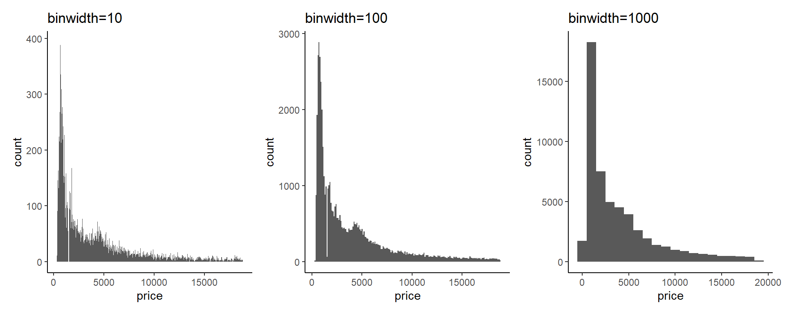

4 Histogram
In this chapter, we introduce the histogram in ggplot2 style.
4.1 basic
We use diamonds dataset for illustration.
library(ggplot2)
library(dplyr)
library(patchwork)
data("diamonds")
diamonds## # A tibble: 53,940 × 10
## carat cut color clarity depth table price x y z
## <dbl> <ord> <ord> <ord> <dbl> <dbl> <int> <dbl> <dbl> <dbl>
## 1 0.23 Ideal E SI2 61.5 55 326 3.95 3.98 2.43
## 2 0.21 Premium E SI1 59.8 61 326 3.89 3.84 2.31
## 3 0.23 Good E VS1 56.9 65 327 4.05 4.07 2.31
## 4 0.29 Premium I VS2 62.4 58 334 4.2 4.23 2.63
## 5 0.31 Good J SI2 63.3 58 335 4.34 4.35 2.75
## 6 0.24 Very Good J VVS2 62.8 57 336 3.94 3.96 2.48
## 7 0.24 Very Good I VVS1 62.3 57 336 3.95 3.98 2.47
## 8 0.26 Very Good H SI1 61.9 55 337 4.07 4.11 2.53
## 9 0.22 Fair E VS2 65.1 61 337 3.87 3.78 2.49
## 10 0.23 Very Good H VS1 59.4 61 338 4 4.05 2.39
## # … with 53,930 more rowsHistogram can be used to show the distribution of data
ggplot(diamonds, aes(x=price)) +
geom_histogram()## `stat_bin()` using `bins = 30`. Pick better value with `binwidth`.
4.2 control the bin size
The bin size of histogram control the interval of data, which can be adjusted by changing the number of binwidth or bins in geom_histogram
p1 <- ggplot(diamonds, aes(x=price)) +
geom_histogram(binwidth = 10) +
labs(title = "binwidth=10")
p2 <- ggplot(diamonds, aes(x=price)) +
geom_histogram(binwidth = 100) +
labs(title = "binwidth=100")
p3 <- ggplot(diamonds, aes(x=price)) +
geom_histogram(binwidth = 1000) +
labs(title = "binwidth=1000")
p1 + p2 + p3 + plot_layout(nrow=1) & theme_classic()